Jsme Futherfox Toller Kennel. Moje ciri je mým nejlepším parťákem, kamarádem, přítelem a děláme spolu vše, na co jen si vzpomenout
Rád fotím na svojí zrcadlovku, kterou jsem nedávno prodal. Naštěstí můj iPhone fotí skoro stejně dobře.
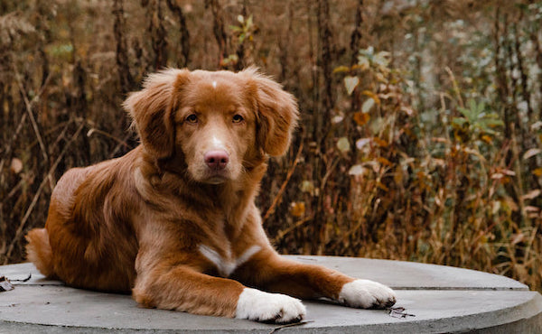 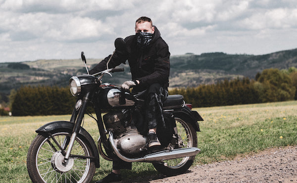 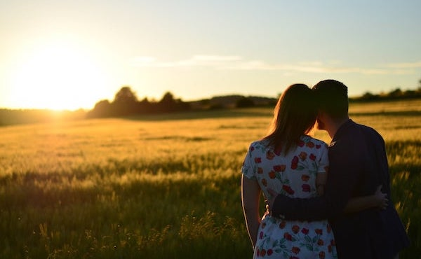 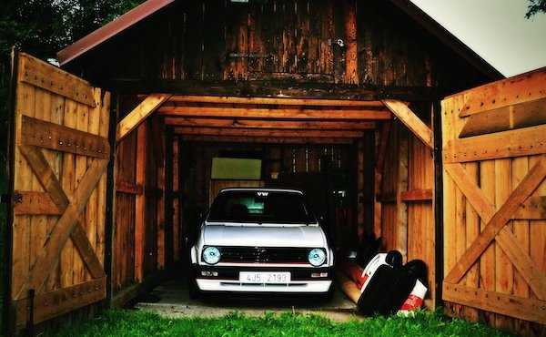 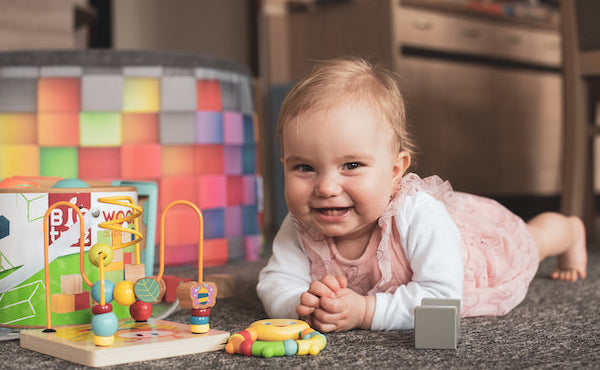 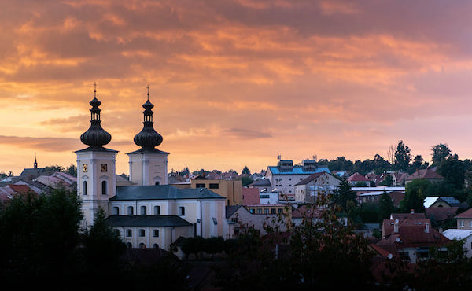 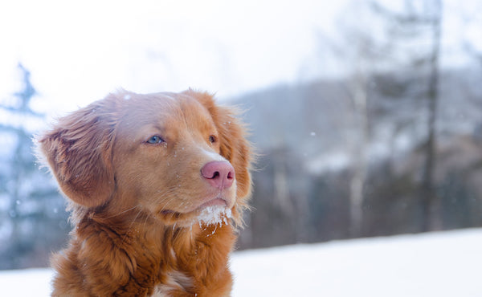 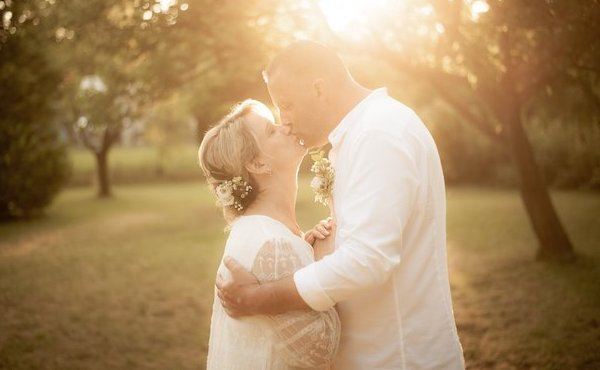 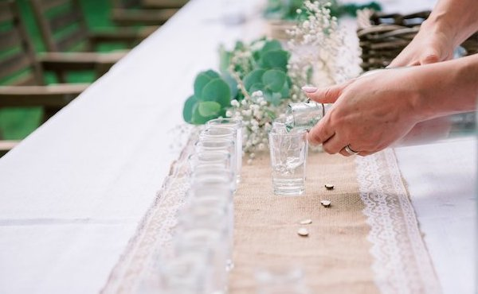Více mé práce najde na mých facebookových stránkách.
Gumbalkán je poloorientační nezávodní offroadový roadtrip jižní Evropou autama s pořizovací hodnotou do 25.000 Kč. A taky Low-cost zábava pro opravdové dobrodruhy.
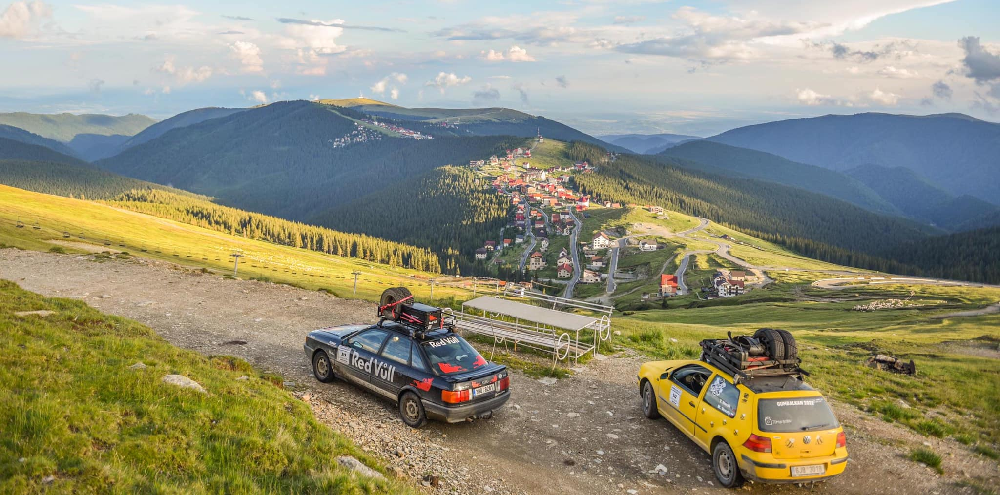Aktuální informace najdete na oficiálních stránkách Gumbalkánu.
O mojí první a možná ne poslední Gumbakánové cestě si může přečíst v novinách Bystřicko a to už na straně 7.
Airsoft je moderní druh sportu, ve kterém po sobě hráči střílejí malými lehkými plastovými kuličkami ze zbraní poháněných manuálně, stlačeným plynem nebo elektricky. Já mám nejradši dvě poslední zmíněné. A co se týká kuliček, jde o kuličky ráže 6 mm, a protože mi není úplně lhostejné životní prostředí, jsou i biologicky rozložitelné. Samotné zbraně svým vzhledem zpravidla kopírují ty reálné, a proto se i často používají při natáčení akčních či detektivních filmů a seriálů. Airsoft se hraje v mnoha pojetích. Buď jde o čistě sportovní a nebo i o napodobování reálných policejních nebo vojenských jednotek při použití autentické výstroje a taktiky. Ale ve výsledku, ano, prostě banda lidí běhá s kuličkovkami po lese.
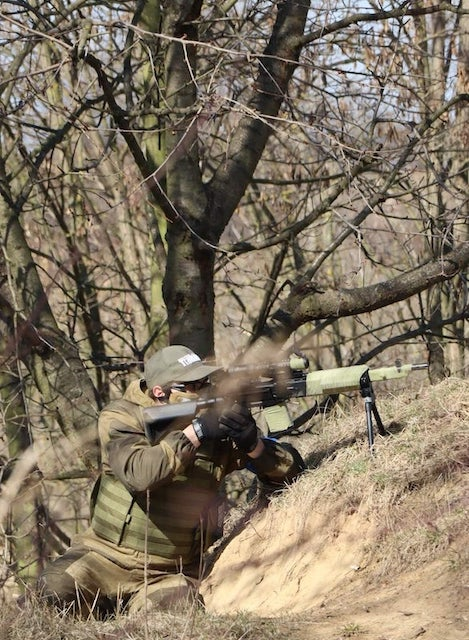Hra je založena na čestném chování hráčů. Pokud je hráč zasažen či jiným dovoleným způsobem „zabit“, musí se sám přiznat (zásah ostatní hráči většinou nemohou vyhodnotit). Zasařený hráč musí zřetelně a nahlas ohlásit „mám“, „hit“, „zásah“, „jsem mrtvej“ nebo podobně, zamávat rukou, sklopit zbraň hlavní k zemi nebo nad úroveň hlavy, v ideálním případě se označit reflexní vestou a nejkratší cestou odejít na tzv. „mrtvolištiě“. Na tomto místě čeká spolu s ostatními vyřazenými hráči do konce hry (přičemž nesmí nijak komunikovat s dosud „živými“ spoluhráči ani se jinak zapojit do probíhající hry). Popřípadě může čekat na „oživení“ např. každou patnáctou minutu (14:45, 15:00, 15:15 atd.). Na „mrtvoly“ je zakázáno střílet a živí hráči se za mrtvé nesmí vydávat.
Cílem jedné hry je splnění předem stanoveného úkolu vycházejícího z typických vojenských scénářů, například eliminace soupeřova týmu, získání vlajky, záchrana rukojmího, pozorovací mise, bránění objektu, obsazení objektu atd.
Kde všude mě můžete sledovat: